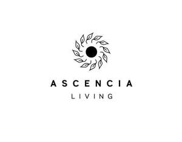

Trade Mark Journal No.2025/030 25 July 2025
UK00004234654 16 July 2025 (5,35,39,41,43,44)

- Class 5
- Fitness and endurance supplements; Vitamin supplements; Dietary supplements; Nutritional supplements; Herbal supplements; Probiotic supplements; Homeopathic supplements; Chlorella dietary supplements; Flaxseed dietary supplements; Calcium supplements; Anti-oxidant supplements; Colostrum supplements; Protein supplements; Dietary supplements consisting of vitamins; Prebiotic supplements; Lecithin dietary supplements; Food supplements; Mineral dietary supplements; Zinc dietary supplements; Mineral nutritional supplements; Acai powder dietary supplements; Propolis dietary supplements; Liquid dietary supplements; Dietary and nutritional supplements; Nutraceuticals for use as a dietary supplement; Vitamin supplements for animals; Protein dietary supplements; Vitamin and mineral supplements; Linseed dietary supplements; Liquid nutritional supplements; Yeast dietary supplements; Liquid vitamin supplements; Enzyme dietary supplements; Dietary supplements for animals; Dietary supplements for pets; Anti-oxidant food supplements; Dietary food supplements; Alginate dietary supplements; Albumin dietary supplements; Liquid herbal supplements; Flaxseed oil dietary supplements; Vitamin and mineral supplements for pets; Wheat dietary supplements; Dietary supplements for humans; Dietary supplements for infants; Pollen dietary supplements; Vitamin and mineral food supplements; Protein powder dietary supplements; Dietary supplements in powder form; Mineral dietary supplements for animals; Dietary supplements with a cosmetic effect; Nutritional supplements for veterinary use; Dietary supplements for medical use; Medicated food supplements; Whey protein dietary supplements; Mineral dietary supplements for humans; Food supplements for sportsmen; Nutritional supplements consisting primarily of magnesium; Protein supplements for animals; Dietary supplements consisting primarily of magnesium; Soy protein dietary supplements; Vitamin supplement patches; Health-aid foods supplements containing ginseng; Health food supplements made principally of vitamins; Vitamin preparations in the nature of food supplements; Soy isoflavone dietary supplements; Dietary supplement drinks; Dietary supplements and dietetic preparations; Linseed oil dietary supplements; Nutritional supplements consisting of fungal extracts; Brewer's yeast dietary supplements; Folic acid dietary supplements; Nutritional supplements consisting primarily of calcium; Calcium tablets as a food supplement; Dietary supplements consisting primarily of calcium; Nutritional supplements consisting primarily of zinc; Nutritional supplements for livestock feed; Herbal dietary supplements for persons special dietary requirements; Nutritional supplements consisting primarily of iron; Food supplements for veterinary use; Dietary supplements and dietetic preparations containing CBD oil; Dietary supplements consisting primarily of iron; Food supplements for dietetic use; Dietary supplements promoting fitness and endurance; Nutritional supplement energy bars; Multivitamins; Medicated supplements for animal feedstuffs; Dietary supplement drink mixes; Dietary food supplements used for modified fasting; Health food supplements made principally of minerals; Mineral supplements for feeding livestock; Feed supplements for veterinary use; Ganoderma lucidum spore powder dietary supplements; Food supplements for medical purposes; Medicated supplements for foodstuffs for animals; Activated charcoal dietary supplements; Food supplements in liquid form; Food supplements for non-medical purposes; Natural dietary supplements for treating claustrophobia; Protein supplement shakes; Wheat germ dietary supplements; Dietary supplements for pets in the nature of a powdered drink mix; Ground flaxseed fiber for use as a dietary supplement; Royal jelly dietary supplements; Antibiotic food supplements for animals; Pine pollen dietary supplements; Diet capsules; Health food supplements for persons with special dietary requirements; Dietary supplements for humans not for medical purposes; Nutritional supplement meal replacement bars for boosting energy; Powdered nutritional supplement drink mix; Dietary supplements for human beings; Fodder supplements for veterinary purposes; Vitamins and vitamin preparations; Dietary pet supplements in the form of pet treats; Preparations for supplementing the body with essential vitamins and microelements; Health-aid foods supplement containing red ginseng; Capsules for medicines; Multi-vitamin preparations; Nutritional supplements made of starch adapted for medical use; Food supplements consisting of trace elements; Powdered nutritional supplement energy drink mix; Powdered fruit-flavored dietary supplement drink mix; Delivery agents in the form of coatings for tablets that facilitate the delivery of nutritional supplements; Preparations of vitamins; Multivitamin preparations; Dietary supplemental drinks; Vitamin tablets; Dietetic foods for use in clinical nutrition.
- Class 35
- Management of health care clinics for others; Administrative management of health care clinics; Retail services in relation to dietary supplements; Wholesale services in relation to dietary supplements.
- Class 39
- Arranging of tours and cruises; Arranging of excursions, day trips and sightseeing tours; Organization of trips; Organization of travel tours; Planning and arranging of sightseeing tours and day trips; Organization of excursions; Organising of excursions; Arranging of sightseeing tours and excursions; Organization of travel and boat trips; Organisation of trips; Arranging and booking of excursions and sightseeing tours; Booking of holiday travel and tours; Organisation of travel tours; Arranging travel tours; Arranging of travel tours; Arranging of coach tours.
- Class 41
- Health and wellness training; Conducting training sessions on physical fitness online; Health and fitness training; Educational seminars relating to beauty therapy; Exercise [fitness] training services; Fitness and exercise training services; Health club services [health and fitness training]; Fitness training services; Physical fitness training services; Personal fitness training services; Training in yoga; Personal trainer services [fitness training]; Exercise and fitness classes; Meditation training; Health club services [exercise]; Physical fitness consultation; Conducting training seminars for clients; Health and fitness club services; Health club [fitness] services; Conducting workshops and seminars in personal awareness; Training services relating to fitness; Conducting fitness classes; Physical fitness education services; Conducting physical fitness conditioning classes; Physical fitness assessment services for training purposes; Consultancy relating to physical fitness training; Training or education services in the field of life coaching; Personal coaching [training]; Conducting workshops and seminars in self awareness; Recreation and training services; Providing of training in the field of health care and nutrition; Conducting classes in nutrition; Provision of educational health and fitness information; Life coaching (training); Physical training services; Conducting workshops [training]; Instruction courses relating to physical fitness; Educational services relating to beauty therapy; Conducting courses, seminars and workshops; Provision of health club [physical exercise] facilities; Educational services relating to physical fitness; Education services relating to yoga; Coaching [training]; Fitness and exercise instruction; Physical fitness centre services; Education services relating to physical fitness; Educational services in the nature of coaching; Training services relating to occupational health; Organisation of training seminars; Educational and training services; Providing fitness and exercise facilities; Training related to nutrition; Providing online training seminars; Training services relating to health and safety; Sports and fitness services; Gymnasium services relating to weight training; Training and education services; Education and training services; Fitness club services; Physical fitness instruction; Educational seminars relating to hairdressing techniques; Tuition in physical fitness; Physical fitness tuition; Training services; Training relating to the management of pet exhibitions; Training services in the field of medical disorders and their treatment; Education services relating to therapeutic treatments; Management training services; Educational and training services relating to healthcare; Physical fitness centres; Education and training in the field of occupational health and safety; Organising of education seminars; Teacher training services; Bodywork therapy instruction; Provision of training courses in personal development; Organising of educational seminars; Health club services; Instruction courses relating to health; Practical training services; Conducting of instructional seminars relating to time management; Providing health club and gymnasium services; Organisation of seminars and conferences; Arranging of seminars; Organisation of meetings and conferences; Organization of seminars; Workshops (Arranging and conducting of -) [training]; Recreational camps; Conducting of instructional seminars; Organisation of seminars; Organisation of cultural activities for summer camps; Organisation of entertainment activities for summer camps; Conducting of educational conferences; Teaching of meditation practices; Organising of education conferences; Organising of educational conferences; Holiday camp services; Seminars (Arranging and conducting of -); Arranging of educational conferences; Summer camps [entertainment and education]; Organization of seminars and conventions in the field of medicine; Arranging, conducting and organization of seminars; Conducting guided tours of caves for educational purposes; Organisation of educational seminars; Conducting guided climbing tours; Organising of meetings in the field of education; Residential training courses; Workshops for cultural purposes; Arranging, conducting and organisation of conferences; Organization of educational conferences; Organisation of automobile rallies, tours and racing events; Organisation of conferences and symposia in the field of medical science; Organisation of continuing educational seminars; Training in catering; Education services relating to health; Provision of educational services relating to health; Education services; Education services relating to quality services; Dietary education services; Physical education services; Education services relating to the provision of restaurant services; Health education; Management of education services; Management education services; Education services relating to nutrition; Education services relating to pharmacy; Education information services; Sports training; Sports and fitness.
- Class 43
- Camp services (Holiday -) [lodging]; Holiday camp services [lodging]; Providing temporary lodging at holiday camps; Catering services specialising in cutting ham for weddings and private events; Accommodation services for meetings; Providing community centers for social gatherings and meetings; Catering services specialised in cutting ham by hand, for weddings and private events; Providing accommodation for meetings; Temporary accommodation services provided by holiday camps; Tourist camp services [accommodation]; Hotels, hostels and boarding houses, holiday and tourist accommodation; Reservation of temporary accommodation in the nature of holiday homes; Holiday lodgings; Hiring of furniture for conferences; Catering services specialising in cutting ham for fairs, tastings and public events; Catering services for conference centers; Catering services for retirement homes; Rental of holiday cabins; Rental of rooms as temporary living accommodations; Rental of vacation accommodation.
- Class 44
- Health counseling; Health spa services; Health care relating to relaxation therapy; Nutrition counseling; Health counselling; Health clinic services; Health care relating to therapeutic massage; Nutrition counselling; Meditation services; Physical therapy services; Mental health screening services; Beauty therapy services; Lifestyle counseling and consultancy for medical purposes; Public health counseling; Medical treatment services provided by a health spa; Personality testing [mental health services]; Pregnancy massage services; Physiotherapy [physical therapy]; Cupping therapy services; Holistic psychotherapy; Music therapy services; Beauty care services provided by a health spa; Ayurveda therapy; Health care relating to hydrotherapy; Development of individual physical rehabilitation programmes; Health clinic services [medical]; Therapy services; Beauty therapy treatments; Medical testing services, namely, fitness evaluation; Health screening services in the field of asthma; Insomnia therapy services; Health screening services; Health center services; Mental health services; Autogenic therapy services; Exercise facilities for health rehabilitation purposes (Provision of -); Psychological counseling services in the field of sports; Providing information relating to dietary and nutritional supplements; Providing information about dietary supplements and nutrition; Provision of health care services; Health care consultancy services [medical]; Health assessment services; Medical health assessment services; Consultancy services relating to health care; Healthcare services; Health hydro services; Health-care services; Medical care services; Medical and healthcare services; Medical services; Animal healthcare services; Human healthcare services; Healthcare information services; Beauty care services; Medical counseling services; Medical spa services; Postnatal care services; Cosmetic body care services provided by health spas; Health consultancy; Medical clinic services; Cupping therapy; Massage; Scraping therapy; Food nutrition consultation; Nutrition and dietetic consultancy; Dietary and nutritional advice; Nutritional advice; Guidance on nutrition; Providing information relating to dietary and nutritional guidance; Nutritional advisory services; Health care relating to fasting; Health care relating to acupuncture; Counselling relating to diet; Weight reduction diet planning services; Physiotherapy; Physiotherapy services; Electro therapy services for physiotherapy; Therapeutical pilates; Sports massage; Dietitian services; Chiropractic; Clinic (Medical -) services; Clinic services (Medical -).
Ascencia Living LTD